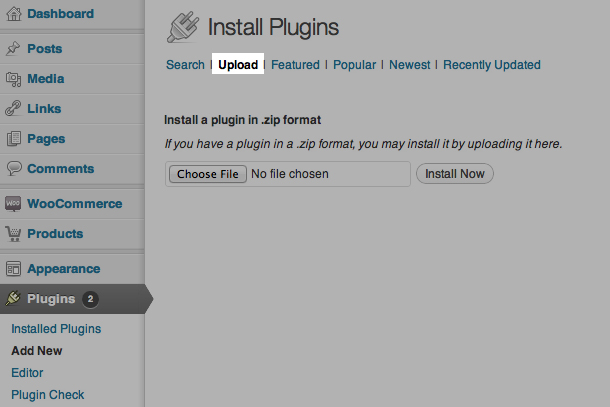
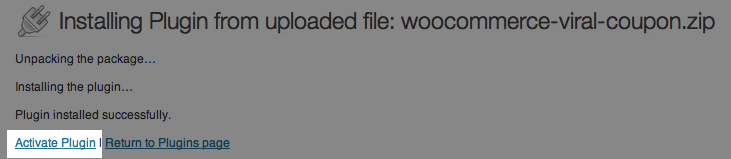
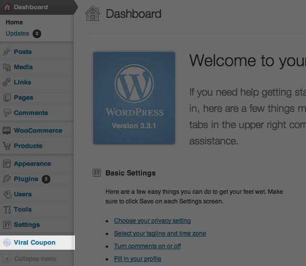
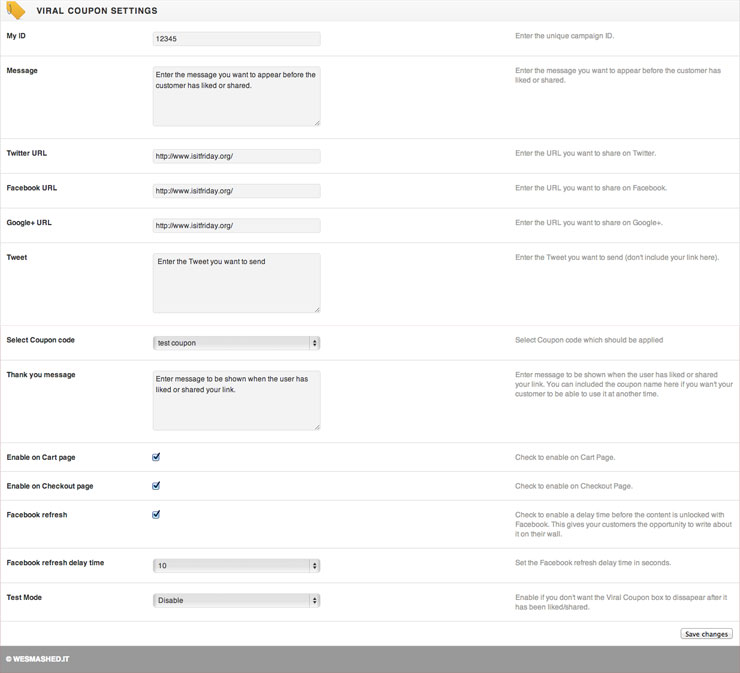

Created: 27/02/2012
By: WESMASHED.IT
"If you want something done, ask a busy person." - Benjamin Franklin
The first thing you need to do is upload the plugin to your server.
Install via WordPress admin dashboard
1) The easiest way to install Viral Coupon is to login to your WordPress admin -> Click: Plugins -> Add new -> Upload.

2) Find the ZIP file of the Plugin in the "Plugin" folder of your download.
3) Click "Install now".
4) When it has been installed click "Activate Plugin".

Installing via FTP
1) Upload the "woocommerce-viral-coupon" folder which you can find in the plugin folder to "/wp-content/plugins/" on your server.
2) Login to your WordPress admin and go to Plugins->Installed plugins.
3) Activate the plugin by clicking activate under "Viral Coupon for WooCommerce".
To start using the plugin head over to the Viral Coupon settings page by clicking the "Viral Coupon" link in your WordPress admin menu.

My ID - This is used to identify every unique discount campaign. Enter something unique here like "5BUCKS12". When a user likes or shares your link for campaign "5BUCKS12" they won't see the Viral Coupon box again until you change the My ID or they clear out there cookies. This can be useful if you for example want to run a free shipping campaign at one time and a percentage discount another time. So short version: Set it to something unique and if you want to show the Viral Coupon box to everybody that has already shared before then change the ID.
- This message is shown to the customer before the have liked or shared your link. Use it to tell your customers that they should like to get a discount. Example: "Like or share to get £5 off your order!".
- The link that is sent along with the Tweet.
- The link that is liked on Facebook. This can be a fanpage or just a link to your site.
- The link that is +1 at Google+. This can be a Google+ page or a link to your site.
Tweet - The twitter message that is sent to twitter along with your link. The message will be placed before your link.
- Select which WooCommerce coupon should be applied once they like or share. If the dropdown is empty then you need to create a coupon in WooCommerce.
Thank you message - This message is displayed once when the user has succesfully liked or shared. Use it to thank your customers or give them the acutal coupon code if you want them to be able to use it at another time.
- If enabled then the Viral Coupon box will be shown on the cart page.
- If enabled then the Viral Coupon box will be shown on the checkout page. If a users shares your link when at the cart page then the Viral Coupon box will not be shown again on the checkout page.
NEW: Enable HTTPS - Send the data over a secure HTTPS connecting. Enable this if you have any SSL errors.
Refresh delay - If enabled you can set a delay between when the users likes or G+'s your link and the coupon is applied. This gives your customer the oppurtunity to write a comment for their like.Test Mode- Enable if you don't want the Viral Coupon box to dissapear after it has been liked/shared.

You can make some simple changes in the plugin code if you want to customize the plugin more then you can do with the settings.
Style the Viral Coupon output:
Put your custom styles in custom.css that you can find in your Viral Coupon plugin folder. All the classes that you can style are already in there with descriptions for when to use which one.
Change the width on the Cart page:
.virallocker-box {
width: 93%;
}
Change the background color on the checkout page:
.virallocker-box-checkout {
background-color: #0C0;
}
Use solid border instead of dashed:
.virallocker-box {
border: 1px solid #3B5998
}
Float thank you message to the right instead of left and change font size:
.unlocked {
float: right;
font-size: 60px;
}
Change the language of the Facebook like button:
Edit line 110 of class-viral-coupon.php
echo '<script type="text/javascript" src="http://connect.facebook.net/en_US/all.js#xfbml=1"></script>';
Replace en_US with the ISO code of your country. Example: For Germany it would be de_DE.
Change the language of the Tweet button:
Edit line 282 of woocommerce-viral-coupon.php
<div><a href="http://twitter.com/share" class="twitter-share-button" data-text="'.$tweet.'" data-url="'.$my_url.'" data-count="horizontal" data-lang="en">Tweet</a></div>
Replace data-lang="en" with your own language code. Example: data-lang="de" for German. Then on the same line replace "Tweet" with the translated version.
Change the langauge of the Google+ button:
Add this somewhere in your themes header.php file (wp-content/your-theme/header.php).
<script type="text/javascript">
window.___gcfg = {
lang: 'zh-CN'
};(function() {
var po = document.createElement('script'); po.type = 'text/javascript'; po.async = true;
po.src = 'https://apis.google.com/js/plusone.js';
var s = document.getElementsByTagName('script')[0]; s.parentNode.insertBefore(po, s);
})();
</script>
Replace zh-CN with your own language and country ISO codes.
Please note that this plugin use cookies that are placed on the users computer to remember if they have already like or shared your link. In some countries you have to inform your visitors that your site uses cookies.
You can read more about cookies here:
http://en.wikipedia.org/wiki/HTTP_cookie
Need support? Please go through the manual once more before you ask for help. This will in most cases solve your issues quicker. If you need further support then don't hesitate to contact us using our dedicated support site.
Thank you!
For WooCommerce questions:
WooThemes Support
WooCommerce Support
For questions regarding Royal Mail for WooCommerce:
Support desk
TAKE CARE
WESMASHED.IT